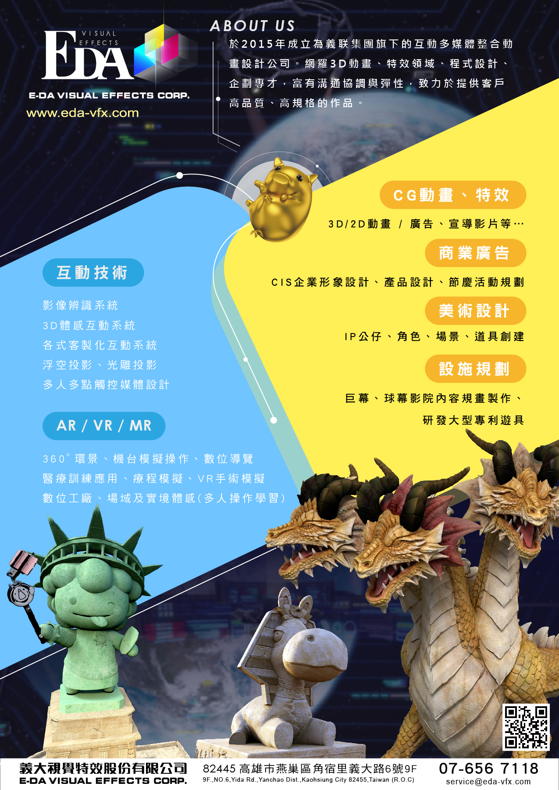
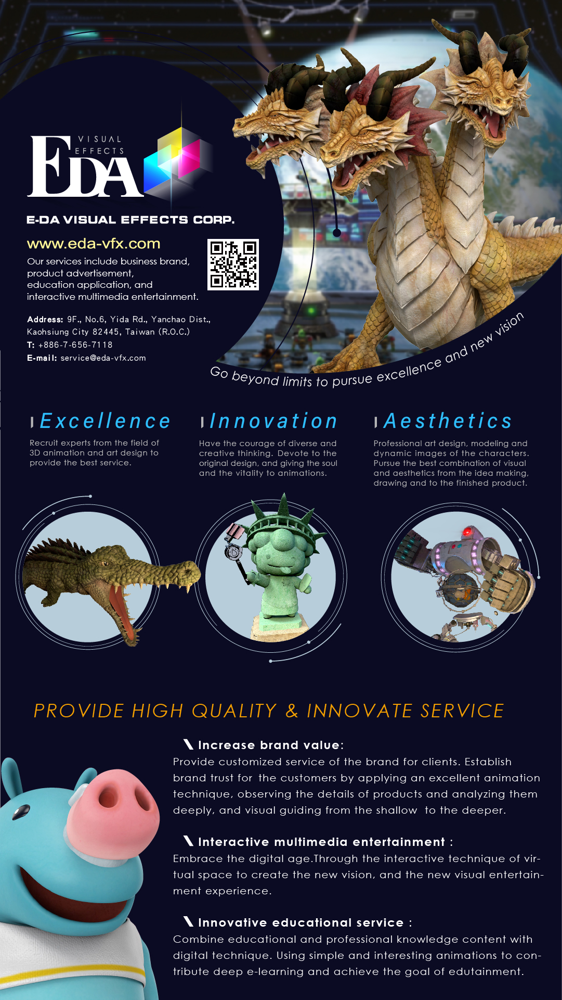

EDA VISUAL EFFECTS CORPORATION
Duration July 2019 - August 2019
Graphic Design Internship Overview Assisted with designing promotional materials, product illustrations, and other graphic design needs as requested; Involved in the layout and the design of the company website regarding arrangement, size, style and other related aesthetic concepts; Ensured all designs meet business objectives and goals, as well as corporate, brand and legal standards.

